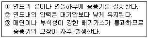
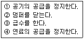

에너지관리기능사 (2008-07-13 기출문제)
1과목: 임의 구분
1. 다음 중 과열도를 바르게 표현한 식은?
- 과열도 = 포화증기온도-과열증기온도
- 과열도 = 포화증기온도-압축수의 온도
- 과열도 = 과열증기온도-압축수의 온도
- 과열도 = 과열증기온도-포화증기온도
(정답률: 69%)

2. 보일러 구조에 대한 설명 중 잘못된 것은?
- 노통 접합부는 아담슨 조인트(Adamson joint)로 연결하여 열에 의한 신축을 흡수한다.
- 코르니시 보일러는 노통을 편심으로 설치하여 보일러수의 순환이 잘 되도록 한다.
- 겔로웨이관은 전열면을 증대하고 강도를 보강 한다.
- 강수관의 내부는 열가스가 통과하여 보일러수 순환을 증진한다.
(정답률: 55%)
3. 보일러 열정산에서 입열항목으로 볼 수 없는 것은?
- 연료의 연소열
- 연료의 현열
- 공기의 현열
- 불완전 연소에 의한 열손실
(정답률: 61%)
4. 보일러 자동제어의 급수제어에서 조작량은?
- 공기량
- 연료량
- 전열량
- 급수량
(정답률: 86%)
5. 증기보일러의 상당증발량 계산식으로 옳은 것은? (단, G : 실제증발량(kgf/h), i2 : 급수의 엔탈피(kcal/kgf), i1 : 발생증기의 엔탈피(kcal/kgf) )(오류 신고가 접수된 문제입니다. 반드시 정답과 해설을 확인하시기 바랍니다.)
- G(i2-i1)
- 539×G(i2-i1)
- G(i2-i1)/539
- 639×G/(i2-i1)
(정답률: 78%)
6. 일반적으로 보일러의 안전장치에 속하지 않는 것은?
- 기수분리기
- 압력제한기
- 저수위 경보기
- 방폭문
(정답률: 82%)
7. 슈트블로워 장치를 사용할 때의 주의사항으로 틀린 것은?
- 부하가 적거나(50%이하) 소화 후 사용한다.
- 분출기 내의 응축수를 배출시킨 후 사용한다.
- 분출하기 전 연도내 배풍기를 사용하여 유인 통풍을 증가시킨다.
- 한 곳으로 집중적으로 사용하여 전열면에 무리를 가하지 않는다.
(정답률: 56%)
8. 보일러 압력계의 시험시기가 아닌 것은?
- 압력계 지침의 움직임이 민감할 때
- 계속사용 검사를 할 때
- 장시간 휴지 후 사용하고자 할 때
- 안전밸브의 실제 분출압력과 설정압력이 맞지 않을 때
(정답률: 68%)
9. 보일러를 구조 및 형식에 따라 분류할 때, 특수 보일러에 해당되는 것은?
- 노통 보일러
- 관류 보일러
- 연관 보일러
- 폐열 보일러
(정답률: 76%)
10. 보일러 시스템에서 공기예열기 설치 사용 시 특징 설명으로 틀린 것은?
- 연소효율을 높일 수 있다.
- 저온부식이 방지된다.
- 예열공기의 공급으로 불완전 연소가 감소된다.
- 노내의 연소속도를 빠르게 할 수 있다.
(정답률: 62%)
11. 탄소(C) 1kg을 연소시키는데 필요한 산소량은 약 몇 kg인가?
- 2.67
- 4.67
- 6.67
- 8.67
(정답률: 45%)
12. 증기의 압력이 높아질 때 나타나는 현상 중 틀린 것은?
- 포화온도 상승
- 증발잠열의 감소
- 연료의 소비증가
- 엔탈피 감소
(정답률: 43%)
13. 자동제어의 비례동작(P동작)에서 조작량(Y)은 제어편차량(e)과 어떤 관계가 있는가?
- 제곱에 비례한다.
- 비례한다.
- 평방근에 비례한다.
- 평방근에 반비례한다.
(정답률: 66%)
14. 다음 제어동작 중 연속제어 특성과 관계가 없는 것은?
- P 동작(비례 동작)
- I 동작(적분 동작)
- D 동작(미분 동작)
- ON-OFF 동작(2위치 동작)
(정답률: 84%)
15. 일명 다량트랩이라고도 하며 부력(浮力)을 이용한 트랩은?
- 바이패스형
- 벨로스식
- 오리피스형
- 플로트식
(정답률: 66%)
16. 다음과 같은 특징을 갖고 있는 통풍방식은?

- 자연통풍
- 압입통풍
- 흡입통풍
- 평형통풍
(정답률: 69%)
17. 유류보일러의 자동장치 점화방법의 순서가 맞는 것은?
- 송풍기 기동→연료펌프 기동→프리퍼지→점화용 버너 착화→주버너 착화
- 송풍기 기동→프리퍼지→점화용 버너 착화→연료펌프 기동→주버너 착화
- 연료펌프 기동→점화용 버너 착화→프리퍼지→주버너 착화→송풍기 기동
- 연료펌프 기동→주버너 착화→점화용 버너 착화→프리퍼지→송풍기 기동
(정답률: 49%)
18. 보일러용 가스버너 중 외부혼합식에 속하지 않는 것은?
- 파이럿 버너
- 센터파이어형 버너
- 링버너
- 멀티스폿형 버너
(정답률: 54%)
19. 보일러 1마력을 열량으로 환산하면 약 몇 kcal/h 인가?
- 15.65
- 539
- 1078
- 8435
(정답률: 61%)
20. 다음 보일러 중 노통연관식 보일러는?
- 코르니시 보일러
- 랭커셔 보일러
- 스코치 보일러
- 다쿠마 보일러
(정답률: 48%)
2과목: 임의 구분
21. 연소가스의 흐름 방향에 따른 과열기의 종류 중 연소가스와 과열기 내 증기의 흐름 방향이 같으며 가스에 의한 소손은 적으나 열의 이용도가 낮은 것은?
- 대류식
- 향류식
- 병류식
- 혼류식
(정답률: 50%)
22. 소요전력이 40kW이고, 효율이 80%, 흡입양정이 6m, 토출양정이 20m인 보일러 급수펌프의 송출량은 약 몇 ㎥/min인가?
- 0.13
- 7.53
- 8.50
- 11.77
(정답률: 36%)
23. 500kg의 물을 20℃에서 84℃로 가열하는 데 40000kcal 의 열을 공급했을 경우 이 설비의 열효율은?
- 70%
- 75%
- 80%
- 85%
(정답률: 65%)
24. 연료의 고위발열량으로부터 저위발열량을 계산할 때 가장 관계가 있는 성분은?
- 산소
- 수소
- 유황
- 탄소
(정답률: 53%)
25. 다음 중 완전연소 시의 실제 공기비가 가장 낮은 연료는?
- 중유
- 경유
- 코크스
- 프로판
(정답률: 57%)
26. 보일러 자동제어에서 인터록의 종류가 아닌 것은?
- 저온도 인터록
- 불착화 인터록
- 저수위 인터록
- 압력초과 인터록
(정답률: 68%)
27. 다음 중 가장 미세한 입자의 먼지를 집진할 수 있고, 압력손실이 작으며, 집진효율이 높은 집진장치 형식은?
- 전기식
- 중력식
- 세정식
- 사이클론식
(정답률: 84%)
28. 다음 보일러 중 수관식 보일러에 해당되지 않는 것은?
- 코르니시 보일러
- 슐처 보일러
- 다쿠마 보일러
- 라몽트 보일러
(정답률: 57%)
29. 표준대기압 하에서 물이 끓는 온도를 절대온도(K)로 바르게 나타낸 것은?
- 212K
- 273K
- 373K
- 671.67K
(정답률: 56%)
30. 온수난방설비에서 물의 밀도 차나 낙차만으로 순환이 어려운 경우 펌프 등을 이용하여 순환을 행하는 온수순환방식은?
- 단관식
- 복관식
- 강제순환식
- 중력순환식
(정답률: 76%)
31. 점화준비에서 보일러내의 급수를 하려고 한다. 이때의 주의사항으로 잘못된 것은?
- 과열기의 공기밸브를 닫는다.
- 급수예열기는 공기밸브, 물빼기밸브로 공기를 제거하고 물을 가득 채운다.
- 열매체 보일러인 경우는 열매를 넣기 전에 보일러 내에 수분이 없음을 확인한다.
- 본체 상부의 공기밸브를 열어둔다.
(정답률: 34%)
32. 보일러 및 압력용기의 내부청소에 대한 일반 적인 방법으로 틀린 것은?
- 수관의 청소작업에는 튜브클리너를 사용한다.
- 통풍면에 접하는 부분은 스케일이 부착된 것 이 많으므로 주의 깊고 신중하게 청소한다.
- 부드러운 부착물은 스크레퍼를 이용하여 물을 뿌리면서 작업한다.
- 용접이음, 리벳이음부는 특별히 신중하게 청소한다.
(정답률: 66%)
33. 포화온도 1⑤℃ 인 증기난방 방열기의 상당 방열면적이 20㎡ 일 경우 시간당 발생하는 응축수량은 약 kg/h 인가? (단, 1⑤℃ 증기 의 증발잠열은 535.6 kcal/kg 이다.)
- 10.37
- 20.57
- 12.17
- 24.27
(정답률: 28%)
34. 증기 난방법을 응축수의 환수 방식에 따라 분류할 때 해당되지 않는 것은?
- 복관 환수식
- 중력 환수식
- 진공 환수식
- 기계 환수식
(정답률: 64%)
35. 진공환수식 증기 난방장치에 있어서 부득이 방열기보다 상부에 환수관을 배관해야만 할 때 리프트 이음을 사용한다. 리프트 이음의 1단 홉상 높이는 몇 m 이하로 하는가?
- 1.0
- 1.5
- 2.0
- 3.0
(정답률: 79%)
36. 보일러 계속사용검사기준에서 사용 중 외부검사에 대한 설명으로 틀린 것은?
- 벽돌 쌓음에서 벽돌의 이탈, 심한 마모 또는 파손이 없어야 한다.
- 모든 배관계통의 관 및 이음쇠 부분에 누기 및 누수가 없어야 한다.
- 보일러는 깨끗하게 청소된 상태이어야 하며 사용상에 현저한 구상부식이 있어야 한다.
- 시험용 해머로 스테이볼트 한쪽 끝을 가볍게 두들겨 보아 이상이 없어야 한다.
(정답률: 77%)
37. 알칼리열화라고도 하며 보일러에 발생하는 응력부식의 일종으로 고농도의 알칼리성에의 해 리벳 이음판의 틈새나 리벳머리의 아래쪽 에 보일러수가 침입하여 알칼리와 이음부 등의 반복응력에 의해 재료의 결정입계에 따라 균열이 생기는 현상은?
- 가성취화
- 고온부식
- 백파이어
- 피팅
(정답률: 69%)
38. 증기난방과 비교한 온수난방의 특징 설명으로 틀린 것은?
- 예열시간이 길다.
- 건물 높이에 제한을 받지 않는다.
- 난방부하 변동에 따른 온도조절이 용이하다.
- 실내 쾌감도가 높다.
(정답률: 71%)
39. 보일러의 매체별 분류 시 해당하지 않는 것은?
- 증기 보일러
- 가스 보일러
- 열매체 보일러
- 온수 보일러
(정답률: 54%)
40. 보일러의 외부부식 방지대책으로 틀린 것은?
- 습기나 수분이 노내나 연도내에 침입하지 못하게 한다.
- 유황분이나 바나듐분 등의 유해물이 함유되지 않은 연료를 사용한다.
- 전열면에 그을음이나 회분을 부착시키지 않도록 한다.
- 중유에 적당한 첨가제를 가해서 황산증기의 노점을 증가 시킨다.
(정답률: 69%)
3과목: 임의 구분
41. 보일러의 손실열 항목 중 손실열이 가장 큰 것은?
- 급격한 외기 온도 저하에 의한 손실열
- 불완전 연소에 의한 손실열
- 방산에 의한 손실열
- 배기가스에 의한 손실열
(정답률: 75%)
42. 보일러 급수 중에 칼슘염이 용해되어 있으면 보일러에 어떤 해를 주는 주된 원인이 되는가?
- 점식의 원인이 된다.
- 가성취화와 부식의 원인이 된다.
- 스케일 생성과 과열의 원인이 된다.
- 알칼리 부식 원인이 된다.
(정답률: 43%)
43. 소용량 보일러에 부착하는 압력계의 최고눈금은 보일러 최고사용압력의 몇 배로 하는가?
- 1~1.5배
- 1.5~3배
- 4~5배
- 5~6배
(정답률: 68%)
44. 증기난방의 방열기 부속품으로서 저온의 공기도 통과시키는 특성이 있어 에어리턴식이나 진공환수식 증기배관의 방열기나 관말트랩에 사용 트랩은?
- 플로트 트랩
- 수봉식 증기 트랩
- 버킷 트랩
- 열동식 트랩
(정답률: 55%)
45. 보일러 운전정지의 순서를 바르게 나열한 것은?

- 1→2→3→4
- 1→4→2→3
- 4→1→3→2
- 4→2→3→1
(정답률: 87%)
46. 난방방법을 분류할 때 중앙식 난방 방식의 종류가 아닌 것은?
- 개별 난방법
- 증기 난방법
- 온수 난방법
- 복사 난방법
(정답률: 80%)
47. 난방부하가 9000kcal/h인 장소에 온수방 열기를 설치하는 경우 필요한 방열기 쪽수는? (단, 방열기 1쪽당 표면적은 0.2m2이고, 방열량은 표준방열량으로 계산한다.)(오류 신고가 접수된 문제입니다. 반드시 정답과 해설을 확인하시기 바랍니다.)
- 70
- 100
- 110
- 120
(정답률: 56%)
48. 유류연소 수동보일러의 운전정지 내용으로 잘못된 것은?
- 운전정지 직전에 유류예열기의 전원을 차단하고 유류예열기의 온도를 낮춘다.
- 연소실내, 연도를 환기시키고 댐퍼를 닫는다.
- 보일러 수위를 정상수위보다 조금 낮추고 버너의 운전을 정지한다.
- 연소실에서 버너를 분리하여 청소를 하고 기름이 누설되는지 점검한다.
(정답률: 50%)
49. 온수보일러의 설치에 대한 설명 중 잘못된 것은?
- 기초가 약하여 내려앉거나 갈라지지 않아야 한다.
- 수관식 보일러의 경우 전열면의 청소가 용이 한 구조일 경우에도 반드시 청소할 수 있는 구멍이 있어야 한다.
- 보일러 사용압력이 어떠한 경우에도 최고사용 압력을 초과할 수 없도록 설치하여야 한다.
- 보일러는 바닥 지지물에 반드시 고정되어야 한다.
(정답률: 54%)
50. 보일러의 연소 시 주의사항 중 급격한 연소가 되어서는 안 되는 이유로 가장 옳은 것은?
- 보일러 수(水)의 순환을 해친다.
- 급수탱크 파손의 원인이 된다.
- 보일러나 벽돌에 악영향을 주고 파괴의 원인 이 된다.
- 보일러 효율을 증가시킨다.
(정답률: 66%)
51. 보일러 역화의 원인에 해당되지 않는 것은?
- 프리퍼지가 불충분한 경우
- 점화할 때 착화가 지연되었을 경우
- 연도 댐퍼의 개도가 너무 좁은 경우
- 점화 원을 사용한 경우
(정답률: 68%)
52. 보일러의 설비면에서 수격작용의 예방조치로 틀린 것은?
- 증기배관에는 충분한 보온을 취한다.
- 증기관에는 중간을 낮게 하는 배관방법은 드레인이 고이기 쉬우므로 피해야 한다.
- 증기관은 증기가 흐르는 방향으로 경사가 지도록 한다.
- 대형밸브나 증기 헤더에도 드레인 배출장치 설치를 피해야 한다.
(정답률: 71%)
53. 물의 온도가 393K를 초과하는 온수보일러에는 크기가 몇 ㎜ 이상인 안전밸브를 설치하여야 하는가?
- 5
- 10
- 15
- 20
(정답률: 66%)
54. 보일러 가스폭발 방지에 관한 설명으로 잘못 된 것은?
- 점화할 때는 미리 충분한 프리퍼지를 한다.
- 연료속의 수분이나 슬러지 등은 충분히 배출 한다.
- 배관이나 버너 각부의 밸브는 그 개폐상태에 이상이 없는가를 확인 한다.
- 연소량을 증가시킬 경우에는 먼저 연료량을 증가시킨 후에 공기 공급량을 증가시킨다.
(정답률: 79%)
55. 제 3종 난방시공업자가 시공할 수 있는 열사 용기자재 품목은?
- 강철재 보일러
- 주철재 보일러
- 2종 압력용기
- 금속요로
(정답률: 42%)
56. 에너지이용 합리화법 시행령에서 에너지다소 비업자라함은 연간 에너지(연료 및 열과 전기의 합) 사용량이 얼마 이상인 경우인가?
- 3천 티·오·이
- 2천 티·오·이
- 1천 티·오·이
- 1천5백 티·오·이
(정답률: 86%)
57. 에너지이용 합리화법상 효율관리기자재의 광 고시에 광고 내용에 에너지 소비효율, 사용량에 따른 등급 등을 포함시켜야 할 의무가 있는 자가 아닌 것은?
- 효율관리기자재 제조업자
- 효율관리기자재 광고업자
- 효율관리기자재 수입업자
- 효율관리기자재 판매업자
(정답률: 69%)
58. 에너지이용 합리화법의 기본 목적과 가장 거리가 먼 것은?
- 에너지소비로 인한 환경피해 감소
- 에너지의 수급안정
- 에너지원의 개발촉진
- 에너지의 효율적인 이용증진
(정답률: 70%)
59. 에너지기본법상 정부의 에너지정책을 효율적 이고 체계적으로 추진하기 위하여 20년을 계획기간으로 5년마다 수립·시행하는 것은?
- 국가온실가스배출저감 종합대책
- 에너지이용합리화 실시계획
- 기후변화협약대응 종합계획
- 국가에너지기본계획
(정답률: 37%)
60. 에너지절약 전문기업의 등록은 누구에게 하도록 위탁되어 있는가?
- 지식경제부장관
- 에너지관리공단 이사장
- 시공업자단체의 장
- 시·도지사
(정답률: 61%)
과열증기온도는 포화증기온도보다 높은 온도에서 존재하는 증기를 말합니다. 이 때, 증기는 압력을 가하면 포화증기온도보다 높은 온도에서도 존재할 수 있습니다. 이를 과열이라고 합니다. 따라서, 과열도는 과열증기온도와 포화증기온도의 차이를 나타내는 것이 맞습니다.